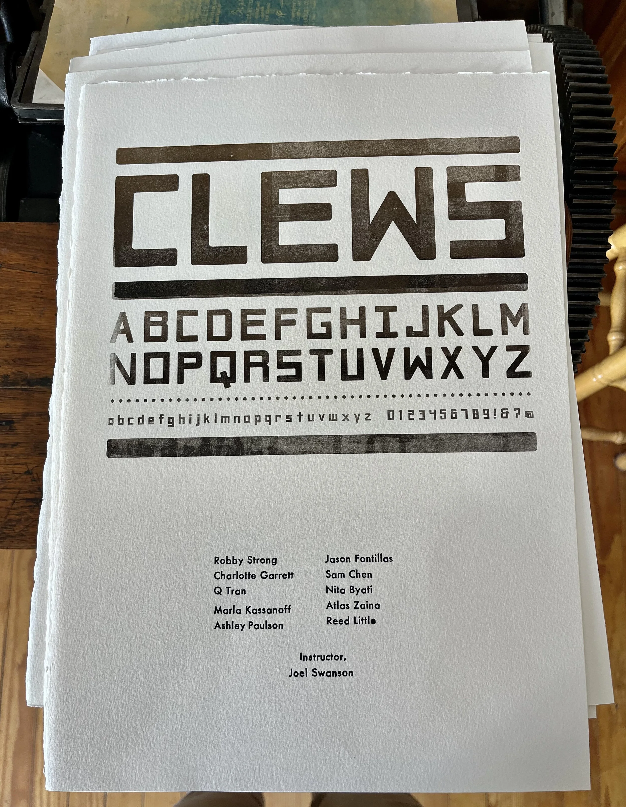

Clews Collaborative Typeface
Inspired by hand-carved lettering at the Château de la Napoule, this collaborative typeface was designed by the Fall 2023 Experimental Typography course. Each student was assigned a subset of the standard glyph set for Latin fonts.
Once completed, we designed and printed type specimens at the Book Arts League. The typeface was printed using a custom polymer plate and the student's names were handset in 14 pt. Futura Bold.

